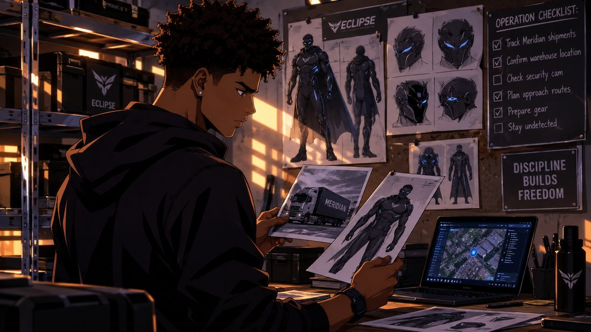
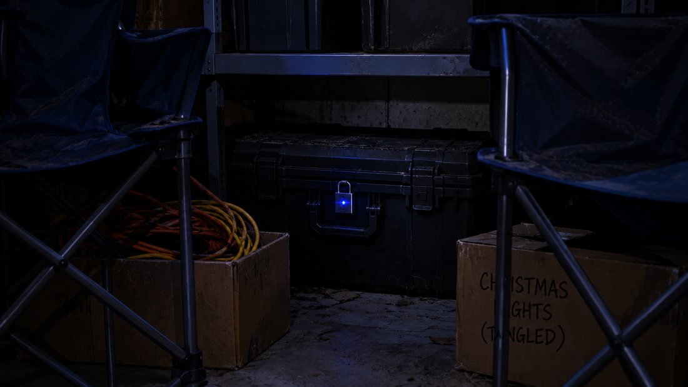
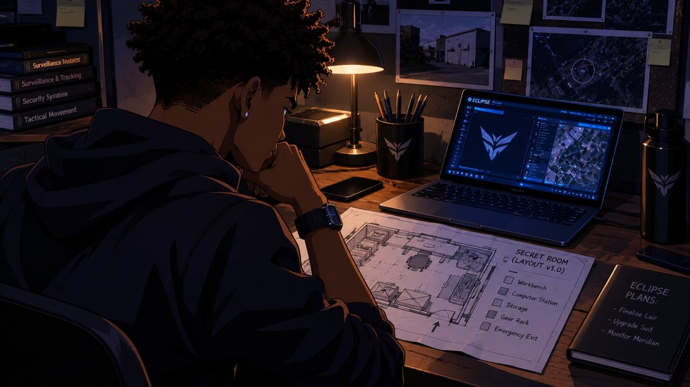
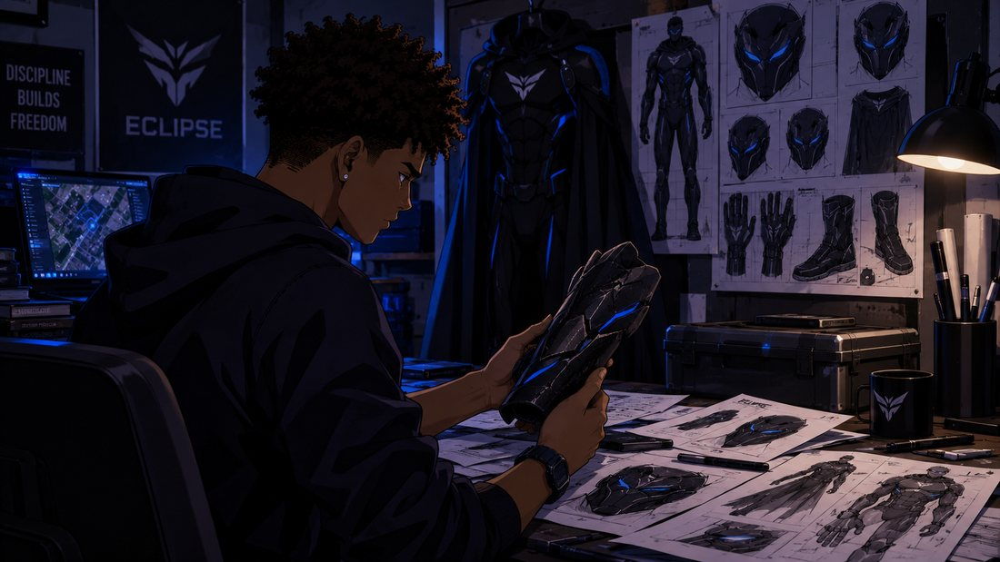
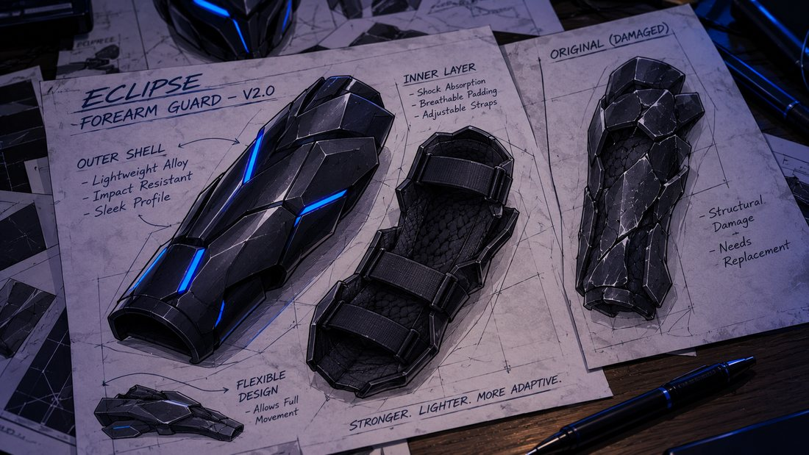
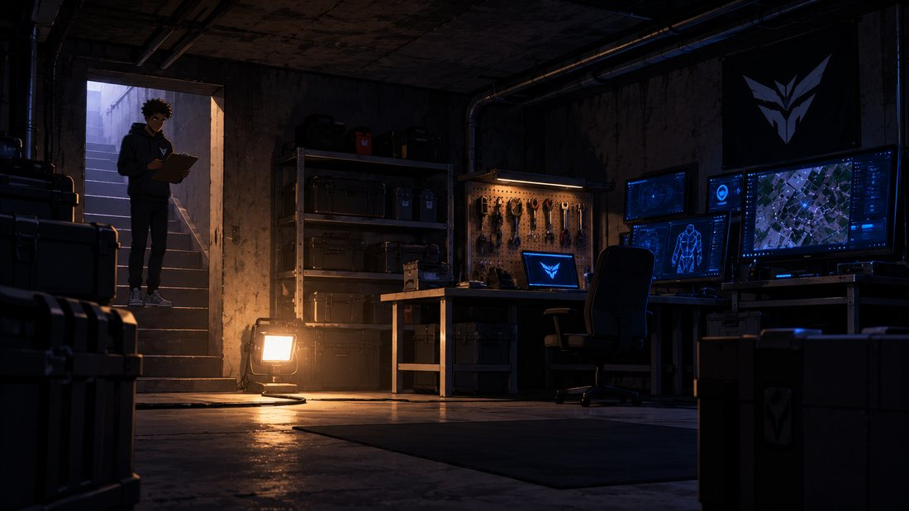
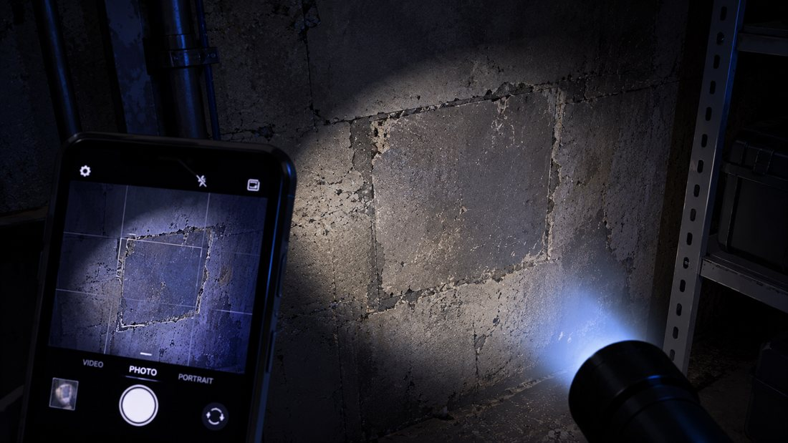
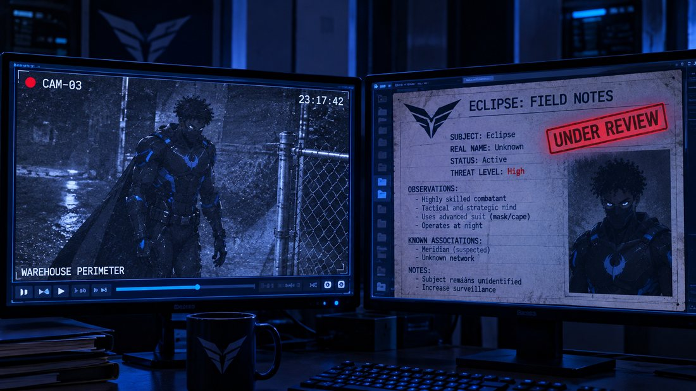
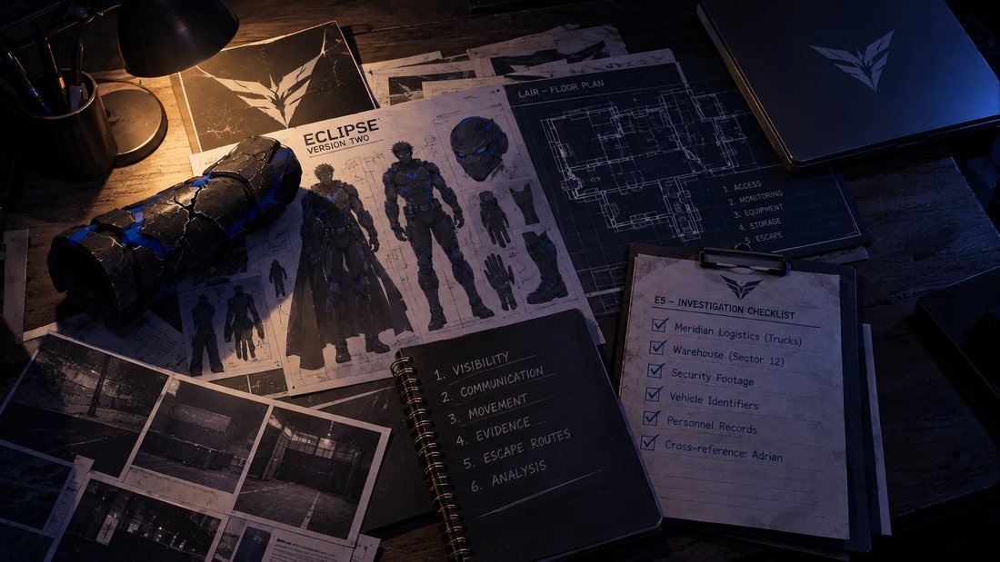

ECLIPSE
Volume 1 · Part 8 · Foundations
Prologue
The Things That Don’t Belong
THURSDAY · 8:16 AM
The morning traffic in Blackthorne City moves the way it always does: slowly, politely, and with one driver in every lane who seems to be hearing about green lights for the first time.
Wandile drives with one hand on the wheel. His backpack sits in the passenger seat with the seatbelt on, the quietest passenger in the history of carpooling. At a red light, his phone lights up in its dashboard cradle.
Wandile shakes his head, smiling. The light turns green. Half a second later, a horn goes off somewhere behind him, because of course it does.
For a moment, everything is ordinary.
Then his thoughts wander home, the way they have all week. A concealed room beneath the storage area. A suit that needs rebuilding. A design that exists only on paper. And a growing list of things he cannot leave lying around when three friends walk through his front door.
His phone connects to the car’s audio.
“Your schedule indicates that you have a full university day,” says Oracle.
“I know.”
“Your available time for the project is therefore limited.”
“I know that too.”
“I was confirming that we share an understanding.”
“You’re getting very good at saying things nobody asked you to say.”
“I have been studying the masters. Mostly Ethan.”
Wandile snorts. “That’s a low blow.”
“It is an observation. I am told the two are closely related.”
He pulls into the university car park and finds a space on the second try, which, by his standards, is a personal best.
The ordinary day begins. At least, the half of it that comes with a timetable.
Chapter 1
Two Sets of Plans
THURSDAY · 10:05 AM
The lecture hall is warm, the projector hums, and Wandile sits near the middle with his notebook open and his phone face down beside it.
He is paying attention. Mostly.
The lecturer draws a diagram on the board, turns, and addresses the room.
“The important thing here isn’t simply whether a system works. It’s whether it continues to work when one part fails.”
Wandile stops writing.
At the bottom of his page, one word is waiting for him, underlined twice since last night. RELIABILITY. He draws a small box around it, like putting a fence around a very important plant.
“A design that only works under ideal conditions,” the lecturer goes on, “is not a dependable design.”
Wandile copies the sentence down word for word. For once, a lecture has handed him something he can use outside the classroom, and he decides not to tell anyone, in case it encourages them.
Afterwards, as the hall empties into the corridor, Ethan catches up with him.
“You looked unusually serious in there.”
“I was listening.”
“That’s what I said. Unusual.”
“You could try it sometime.”
“I do listen.”
Charlotte falls into step beside them. “You listen for the word lunch.”
“And I have an excellent record of responding to it.”
Olivia approaches from the opposite end of the corridor. “Are we still meeting tomorrow?”
“We’re meeting tomorrow,” says Ethan. “The only question is whether Wandile remembers that he’s hosting.”
“I remember.”
“Good,” says Charlotte, “because Ethan has already planned the menu, the entertainment, and apparently the seating arrangement.”
“I have not planned the seating arrangement.” A beat. “Yet.”
Olivia laughs.
“Just make sure you actually relax tomorrow, Wandile.”
“I will.”
“I’m holding you to that.”
She gives him a small smile and heads off to her next class.
Ethan watches her go. Then he turns to Wandile.
“Interesting.”
“Don’t.”
“I didn’t say anything.”
“Your face did,” says Charlotte.
“My face is allowed to have opinions.”
They wander off together, already arguing about lunch. Wandile’s phone buzzes once in his pocket. He checks it with the care of a man defusing a bomb.
He silences it before anyone can see.
Two lives. One calendar. And Friday is getting closer.
Chapter 2
Clearing the Surface
THURSDAY · 4:12 PM
Back at the house, Wandile steps into the storage area and shuts the door behind him.
The metal shelving stands where he left it, the concealed panel still hidden behind it. He doesn’t touch the shelving. Instead, he studies the ordinary side of the room, the side a visitor might see if a visitor wandered in looking for the bathroom.

The first suit sketch is still pinned to the wall. Beside it hang the photograph of the Meridian truck and the chalk checklist he used while planning the room. Together, they look like a very small, very suspicious detective board.
“I said I’d take these down before Friday,” he says.
“Correct,” says Oracle.
“You could have reminded me earlier.”
“You did not specify a reminder time.”
“You’re an AI. Surely you can work out what ‘before Friday’ means.”
“I can. I did not know when you intended to complete the task.”
Wandile gives the laptop a look. “Convenient.”
“I have been told, on three separate occasions, not to nag. I have been extremely disciplined.”
“That was about my laundry.”
“A principle is a principle.”
He starts taking everything down. The truck photograph goes into a private folder. The rough sketch joins the rest of his design papers. The chalk checklist disappears under a damp cloth, one tidy line at a time.
He checks the corners for anything he has missed. Then he looks at the shelves: ordinary boxes, old household equipment, a few things his parents left behind. Nothing that would make a visitor curious.
He moves the sensitive materials into a locked storage case and slides it in among the other containers. He checks the lock twice.
“The materials are now out of immediate view,” says Oracle.
“That’s the idea.”
“The case itself is still identifiable as a secure container.”
Wandile looks at it. It is, annoyingly, the most interesting object in the room. “Then it needs to look less interesting.”
He drags it into a less obvious spot and builds a wall of boring around it: two folding camping chairs, a box of old extension cords, and a carton labelled CHRISTMAS LIGHTS (TANGLED), which is both true and the best protection money can buy.

“That is an improvement,” says Oracle. “Statistically, nobody opens a box of tangled lights voluntarily.”
“I’ll take the approval.”
He steps back. The room looks like a storage room again. No sketches. No photographs. No visible evidence of what he has been working on.
He turns off the light and leaves. Behind the shelving, the concealed entrance stays exactly as it was: untouched, and keeping its secrets.
Chapter 3
A Room With Questions
THURSDAY · 5:03 PM
Upstairs, Wandile spreads last night’s floor plan across his desk.
The measurements are all there, along with his notes on the room’s condition. He has drawn a rough layout: a workbench along one wall, a computer station, equipment storage, and enough space to move around without knocking into everything.

But the layout is only a proposal. The room is old, it was hidden for a reason, and he doesn’t know enough about how it was built to start changing it.
“I need someone to assess the room,” he says.
“That is consistent with the safety requirements identified yesterday,” says Oracle.
“Structural condition. Electrical supply. Ventilation. Moisture. Fire safety.”
“Those matters should be assessed by appropriately qualified professionals.”
“I know. I’m not about to start pulling wires out of walls.”
“I appreciate that.”
He looks at the plan again. “The difficult part is explaining why I want the room kept private.”
“You can explain that the property contains a concealed service space and request that its details be treated confidentially.”
“That sounds like something a very boring lawyer would say.”
“That is the intention. Boring is excellent camouflage.”
“I don’t need someone wandering around the house telling everyone what they found.”
“A legitimate professional assessment will require accurate information about the space. Confidentiality should be agreed before the work begins.”
Wandile nods. He opens a new document and types a heading, then a list of everything he needs answered.
“No shortcuts,” he says.
“That is advisable.”
“You really don’t know how to make that sound encouraging.”
“Would you prefer that I describe an unsafe shortcut as an exciting opportunity?”
“No.”
“Then we agree.”
He saves the document and goes digging through the house’s old paperwork: plans, service records, renovation notes. Some of it is useful. Most of it is incomplete, written by people who clearly never imagined anyone would need it.
He scans the pages that matter and files them in the assessment folder.
The room is still unfinished. But now he has a responsible way to find out what it can safely become.
Chapter 4
Version Two, in Pieces
THURSDAY · 6:21 PM
By evening, the bedroom desk has disappeared under design sheets.

Wandile has taken the Version Two suit apart, on paper at least, into separate pieces: the mask, the forearm guards, the gloves, the boots, the communications system. The cape lives on a page of its own, under a note in his handwriting: MODULAR CAPE SYSTEM — DEVELOPMENT REQUIRED. Beside it sits the cracked guard from Version One, still hanging on to its dignity, barely.
He picks the guard up and turns it over. “The problem wasn’t just the material.”
“Your previous design also offered limited support and no reliable way to distribute impact,” says Oracle.
“Exactly.”
He sets it down and starts a new drawing. The revised guard sits more securely around the forearm without locking up the wrist. The outer shell protects what is underneath; the inner layer is built for comfort and a proper fit. He fills the margins with notes.

“It needs to stay in place when I move. It can’t catch on anything. And I need to be able to take it off quickly.”
“Those are reasonable design requirements.”
“I want protection, not something that makes me move like a refrigerator.”
“I will add ‘does not resemble a refrigerator’ to the specification.”
“Please do.”
He moves on to the gloves. The fingers have to stay flexible. The grip has to be dependable. The material has to let him pick up ordinary objects without losing all feeling, because a hero who can’t pick up his own keys is just a man in an expensive costume. He sketches a revised wrist connection between the glove and the guard.
Then the boots. The first suit was assembled from whatever was lying around: ordinary clothing and a few basic protective pieces. The new design needs proper footwear, something that supports movement and protects his feet without making him slower or less stable. He writes it across the page in block capitals.
FIT BEFORE APPEARANCE.
Oracle puts the separate design pages side by side on the laptop.
“Your current drawings contain several components that depend on one another.”
“I know. The glove and the guard have to work together. The mask has to connect to the communications system. The boots have to fit the rest of the suit.”
“It may be more efficient to develop and test each component separately before integration.”
“That’s what we’re doing.”
He looks at the full design one more time. On paper, the suit looks incredible. But a drawing can’t tell him whether it will actually work, and he knows it.
He closes the design folder and opens a fresh one.
“Let’s start with the parts I can actually build and test.”
Chapter 5
The First Inventory
THURSDAY · 7:34 PM
The hidden room is lit by a single temporary lamp, and the light makes the dust look like it is trying to leave.
Wandile stands at the entrance with a clipboard. He hasn’t started renovating, and nothing here is permanent. But the room is no longer empty. Since last night he has dragged down the bare minimum: a rough workbench, a pegboard of borrowed tools, a few shelves of cases, and his spare monitors on a folding desk, all running off one extension cord that Oracle has already complained about twice.
For now, he is only documenting what is there and what will eventually need to go in.

“We need to separate what belongs here from what can stay upstairs.”
“I have prepared a preliminary inventory,” says Oracle.
The laptop fills with categories.
“That’s a lot of equipment for a room held together by a folding desk.”
“It is a preliminary list. It does not mean everything should be purchased immediately.”
“Good, because I’m not turning this into a shopping spree.”
He studies the room. “Workstation stays on the far wall. Storage along the side. Workbench near the light. Just done properly this time.”
“That arrangement may be suitable, subject to the professional assessment and final measurements.”
“You really enjoy adding that last part.”
“It remains important.”
He marks the positions on his floor plan. Then he notices that one corner of the room has a slightly different surface from the rest, a patch of wall that looks as if it was repaired by someone who cared more about finishing than about neatness.
He doesn’t touch it. He doesn’t try to open anything. He photographs it and adds a note for the inspector.

“Another question for the inspector.”
“Added to the assessment notes.”
He takes one last photograph from the entrance. The room still looks half-forgotten, with a folding desk and a few shelves doing their best to seem official. But his plan for it is getting sharper.
He folds the floor plan, tucks the clipboard under his arm, and heads upstairs.
Chapter 6
A File That Grows
THURSDAY · 8:16 PM · Meridian Security and Intelligence Division
The office is quiet. The same operator sits at the same desk, in the same chair, with what appears to be the same cold coffee.
The file is still open on his main monitor.
SUBJECT: ECLIPSE.
IDENTITY: UNKNOWN.
ASSOCIATED INCIDENT: MERIDIAN DEPOT.
STATUS: UNDER REVIEW.
He plays the footage again. The masked figure moves along the depot perimeter, too far away and too badly lit to tell him anything useful. He pauses the frame. On the second monitor sits the recovered page: ECLIPSE: FIELD NOTES.

He opens the incident report. A routine perimeter employee found the page. Nobody reported a confrontation. No equipment is missing. There is no confirmed entry into the facility.
“No forced access,” he mutters. “No reported damage. No confirmed contact with personnel.”
He opens a new section. “So what were you looking for?”
He zooms in. The figure isn’t close enough to identify. The mask hides the face, and the clothing offers almost nothing. So he opens the depot’s logistics records and lines up the time of the sighting against the truck movements. A shipment record appears. He studies it. The information is incomplete.
“Interesting.”
He types a note requesting the relevant vehicle movement records and the original perimeter report.
He doesn’t send an alert to the wider organisation. He doesn’t contact Adrian. For now, he wants to understand the incident before turning it into someone else’s problem.
He saves the updated file. STATUS: UNDER REVIEW. On the screen, the masked figure waits, frozen mid-step. The operator leans back in his chair.
“Let’s see what brings you back.”
The office goes quiet again. Somewhere down the corridor, a vending machine hums to itself.
Chapter 7
A Normal Friday
THURSDAY · 9:42 PM
By nine-forty, Wandile is back in his bedroom, and his desk has become the border between two countries. University books stack up on one side. Suit drawings spread across the other.
He checks the storage area one more time through the room camera. Everything is out of sight. He closes the feed.
His phone lights up with the group chat.
Wandile laughs quietly and types again.
A few seconds pass. Then a private message arrives.
He reads it twice. Then a third time, strictly for accuracy. He types a reply.
He puts the phone down and just sits there for a moment.
Tomorrow, his friends will be in his house. They’ll eat, argue over what to watch, and make themselves comfortable as if they own the place. And he wants it that way.
He looks at the Version Two drawings. “Tomorrow stays normal.”
“That is the stated objective,” says Oracle.
“No project work while they’re here. No equipment lying around. No strange noises from the storage area.”
“I can assist by keeping the project materials organised and the workstation inactive during the gathering.”
“Good.”
“I will also refrain from commenting on the pizza.”
“You don’t have to comment on everything.”
“That is a great deal to ask.”
He closes the design folder. Then he opens his university assignment and gets to work.
Not because the other responsibilities have disappeared. Because this one matters too.
Chapter 8
The Foundation
THURSDAY · 11:18 PM
By eleven, the house is quiet. Wandile walks through the storage area one last time, his phone torch sweeping across the shelves.
Everything is back where it belongs. The ordinary boxes are exactly as ordinary as they should be. Nothing on the walls suggests that anything unusual is happening. He checks the concealed panel without opening it, then heads back to his bedroom.
The floor plan lies on his desk beside the Version Two design. He adds a final note to the room checklist.
NO RENOVATION UNTIL PROFESSIONAL ASSESSMENT.
Below it, he writes out the next steps.
He reads the list. There is a lot left to do. But for the first time, the project feels less like a collection of ideas and more like something with a direction.
“Foundations first.”
“A suitable description of the current stage,” says Oracle.
“You agree?”
“Yes.”
Wandile looks at the laptop. “That was easy.”
“I can make the next one more difficult if you prefer.”
“Please don’t.”
He closes the laptop, and the desk settles into the lamplight: the cracked forearm guard from Version One, the revised Version Two drawings, the floor plan of the hidden room, the six notebook headings, and a checklist with more things ticked off than yesterday.

Nothing is finished. But the foundation is there.
Final Page
Tomorrow
THURSDAY · 11:56 PM
At Meridian, the operator’s monitor is still on. The Eclipse file is still open. A new line has been added to the incident record.
REQUESTED: VEHICLE MOVEMENT RECORDS.
REQUESTED: ORIGINAL PERIMETER REPORT.
PURPOSE: INCIDENT REVIEW.
He saves the file and switches off his desk lamp. The screen goes dark.
Across the city, Wandile’s phone sits on the bedside table. A final message lights up the group chat.
Wandile reads it, smiles, and puts the phone down.
Downstairs, the storage-room door is closed. Behind the ordinary shelving, the concealed entrance stays hidden. And beyond it, the unfinished room waits.